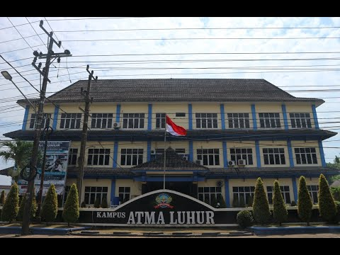

Teknik Informatika
Mempelajari komputasi, pemrograman, dan pengembangan solusi berbasis teknologi.
Jelajahi lingkungan akademik yang mendorong pengetahuan, kreativitas, teknologi, dan inovasi untuk menghadapi tantangan masa depan.
Jelajahi Program Studi Tentang Kami
Kenali bidang studi yang dapat menjadi langkah awal perjalanan akademik dan profesionalmu.
Mempelajari komputasi, pemrograman, dan pengembangan solusi berbasis teknologi.
Menghubungkan teknologi informasi dengan proses dan kebutuhan organisasi.
Mengeksplorasi peluang bisnis, inovasi, dan transformasi di era digital.
Mengembangkan kompetensi pendidikan dengan pemanfaatan teknologi informasi.
Atma Luhur menjadi tempat untuk mengembangkan wawasan, kemampuan, dan karakter melalui pengalaman belajar serta aktivitas akademik.
Kenali Atma LuhurLihat suasana, fasilitas, dan aktivitas yang menjadi bagian dari pengalaman kampus.
Lihat Galeri